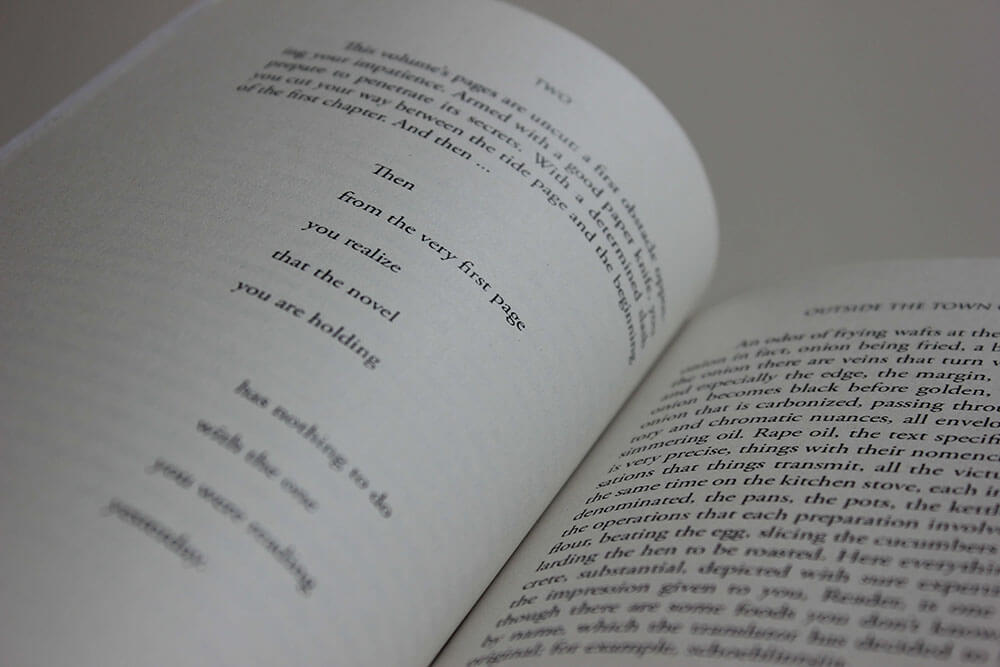
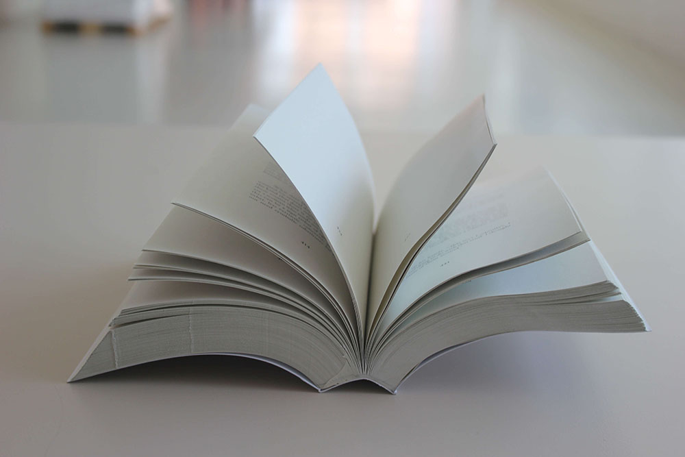
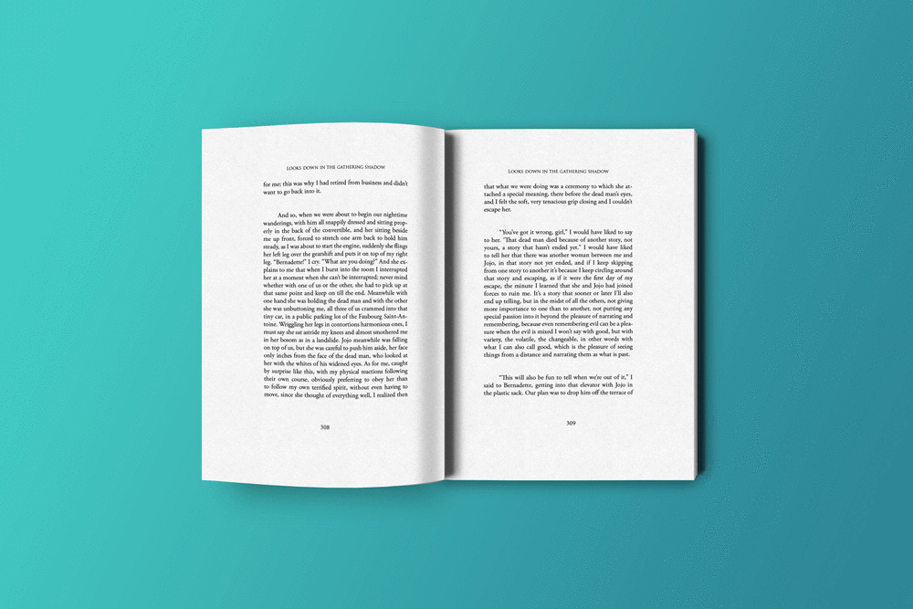
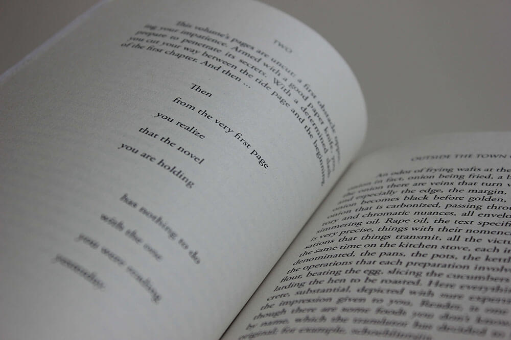
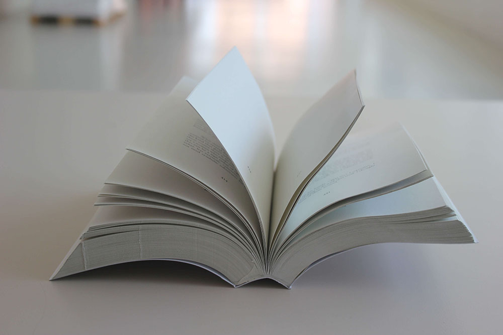
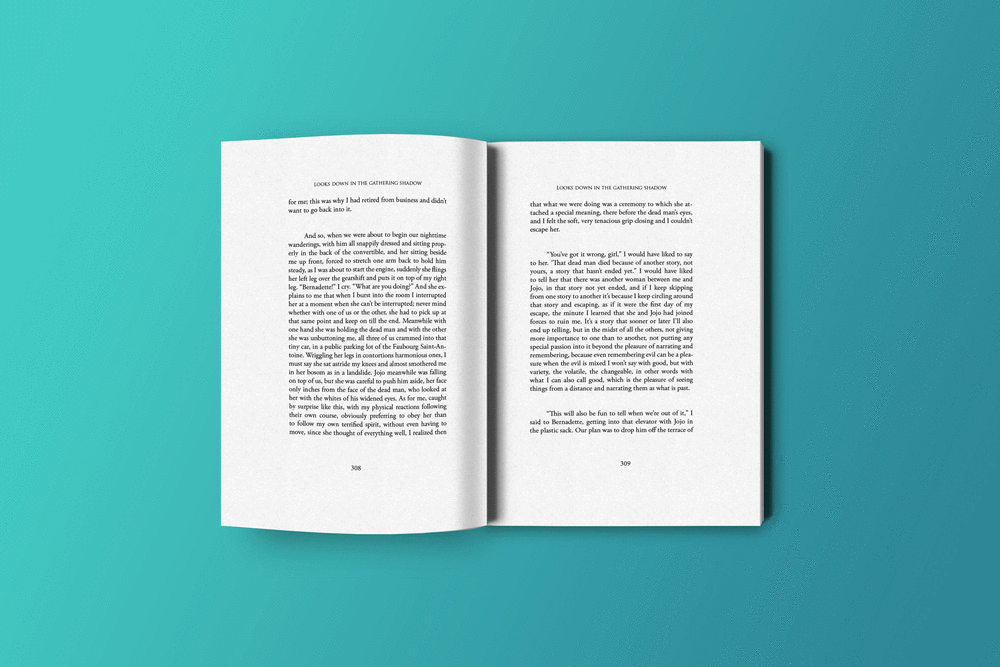

To design a book: Italo Calvino’s famous postmodern novel, If on winter’s night a traveller.
The 1979 novel by the Italian writer Italo Calvino is a postmodernist narrative, in the form of a frame story, is about the reader trying to read a book called If on a winter’s night a traveler. Each chapter is divided into two sections. The first section of each chapter is in second person, and describes the process the reader goes through to attempt to read the next chapter of the book he is reading. The second half is the first part of a new book that the reader (“you”) finds. The second half is always about something different from the previous ones and the ending is never explained.
As a reader of this book, I was strongly aware of this sense of waiting and anticipation that seemed to fill me. There always seems to be a wait – a wait for some clarity, a perfect ending, some understanding, maybe closure. So when I was tasked with designing this book, I wanted to translate this idea of ‘the wait’ into the design. Next, the question was how to convey this wait? The use of blank spaces seemed like a subtle way to hint to the readers about the nature of the book. So the entire book has blank pages inserted into the flow of the text which increase in volume as the book progresses. The next question was where to insert these blank spaces? I devised a system where blank pages were added where it was least expected – blank spaces that have been used strategically in the narrative to enhance the suspense (img 3 in slider) or in the case of hyphenated words where the reader has to turn a few blank pages to see the second half of the word (img 5 in slider).
 




